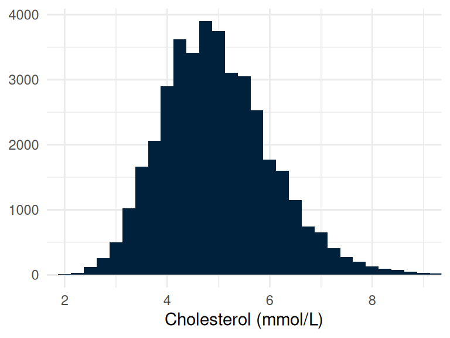
Describing and visualising data
Week 7
Fred Ho
What you have learnt so far
- From Epi:
- Study type: descriptive vs. analytic
- Study design: observational and experimental
- Measures of occurrence and association
- Non-causal explanations of associations
- Confounding bias
- Mediator bias
- Collider bias
- From Stats:
- Prep sessions: tidy data, file paths, CSV structure
By the end of this session, you will be able to
- Classify a variable as nominal, ordinal, discrete, or continuous, and explain how variable type constrains the analysis available
- Select and construct an appropriate table or plot for one or more variables of a given type
- Calculate and interpret measures of central tendency and spread, and justify a choice between mean/SD and median/IQR by distributional shape
- Describe the normal distribution and apply the 68-95-99.7 rule
- Critique a published figure and identify design choices that mislead
Tidy data, briefly revisited
- One row per observation, one column per variable
nhanes_mph: 41,765 rows, 27 columns- No reshaping needed before we start
Block 1: summarising and visualising
Getting a feel for one variable at a time
Why summary?
- Four people’s data fits on a slide
- 41,765 people’s does not
- A statistic compresses a column to a few numbers
- These measures are known as descriptive, or summary, statistics
- Also called ‘exploratory data analysis’
- The goal: get a feel for one variable at a time, and spot quirks before any transformation or analysis
The mean
- One of the most widely used measures of central tendency
- Add up every value, divide by how many there are
\[\bar{x} = \frac{1}{n}\sum_{i=1}^{n} x_i\]
- A fair ‘typical value’ when the distribution is roughly symmetric
The standard deviation
- Often reported with the mean, a widely used measure of spread
- How spread out the values are around the mean, in the variable’s own units
\[s = \sqrt{\frac{1}{n-1}\sum_{i=1}^{n} (x_i - \bar{x})^2}\]
- How much individuals typically differ from the mean
Distribution
- A variable’s distribution is how its values are spread out
- Which values are common, which are rare, and how far apart they reach
- Mean, SD, median and IQR are all attempts to describe it in a few numbers
- The shape itself decides which of those numbers is honest
- We see shape by counting values into bins and plotting the counts, named properly later
Three shapes, three variables
- Roughly symmetric
chol, mmol/L- Mean 4.97, median 4.89
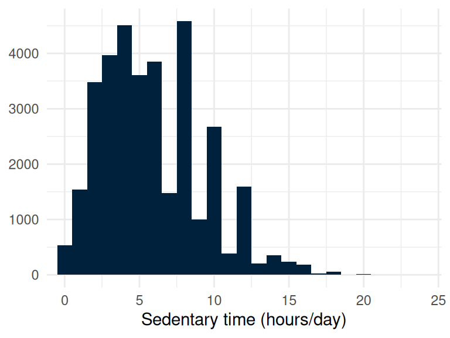
- Skewed to the right
sed, hours/day- Mean 6.56, median 5.00
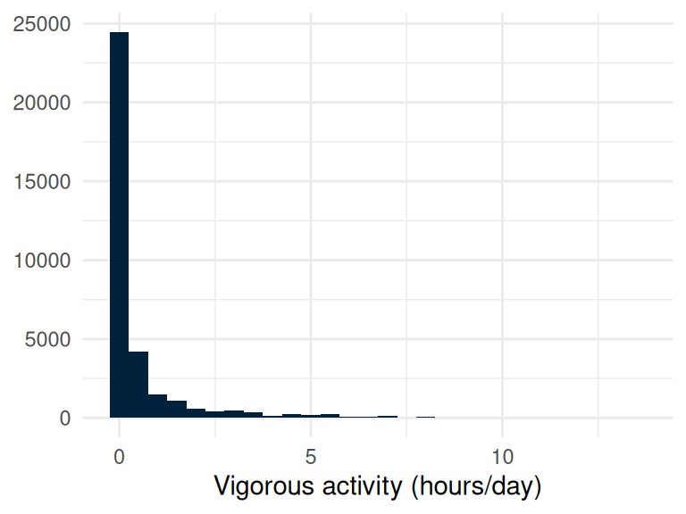
- Heavily skewed
vpa_t, hours/day- Median 0.00: 64% report none
The normal distribution
- A normal distribution is symmetric, bell-shaped
- Mean and median sit at the same place
- The 68-95-99.7 rule: about 68% within 1 SD, 95% within 2, 99.7% within 3
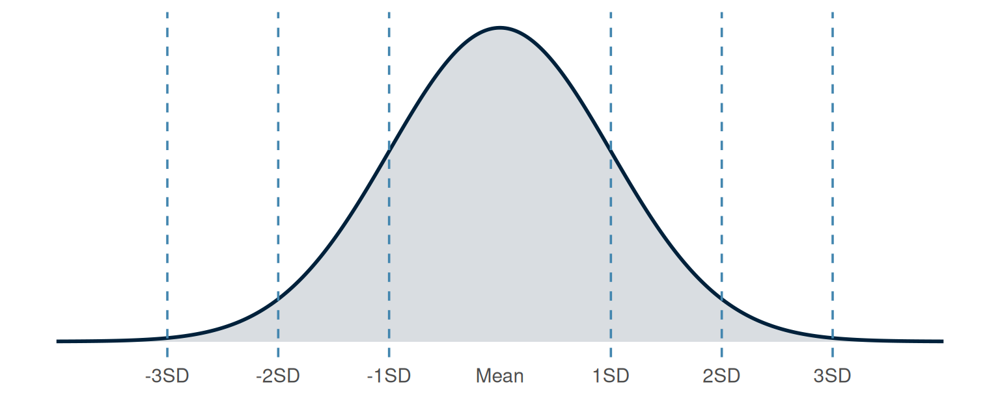
Median and IQR
- Mean and SD are commonly used, but they can mislead
- When the data is skewed, we should consider:
- Median: the middle value once sorted, half the data below it, half above
- IQR: the width of the middle 50% of the data
\[\text{IQR} = Q_3 - Q_1\]
- Often reported as the range itself, Q1 to Q3, not one number
Which do we report: mean/SD, or median/IQR?
- The choice depends on shape, not preference
| Shape | Report |
|---|---|
| Roughly symmetric | Mean and SD |
| Skewed, or with extreme values | Median and IQR |
- On skewed data, a mean and SD are technically correct and practically misleading
Detecting skewness
- Altman and Bland (1996), BMJ Statistics Notes: ‘Detecting skewness from summary information’
- Tells skew from summary numbers alone
- Reused across the course
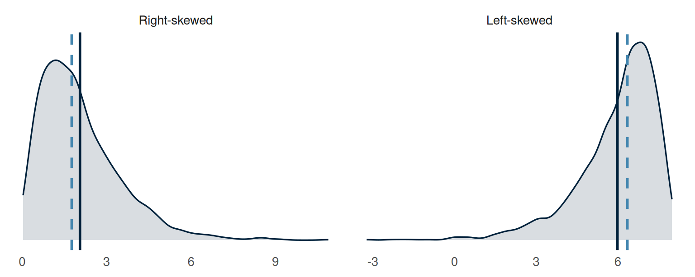
- Solid: mean. Dashed: median.
The five-number summary
- Mean, SD, median and IQR give a crude description
- Five numbers give a fuller picture: minimum, Q1, median, Q3, maximum
- Q1, the 25th percentile: a quarter of the data falls at or below it
- Q3, the 75th percentile: three quarters of the data falls at or below it
- Together, the five numbers split the data into four equal-sized chunks
The five-number summary: sedentary time
| Minimum | Q1 (25th percentile) | Median | Q3 (75th percentile) | Maximum |
|---|---|---|---|---|
| 0.0 | 3.0 | 5.0 | 8.0 | 166.7 |
- Sedentary time (
sed), hours/day, 34,434 participants with a value recorded
Try it: which summary?
- Ten patients’ waiting times, in minutes: 3, 22, 4, 3, 5, 2, 30, 4, 5, 3
- Would you report the mean and SD, or the median and IQR? Why?
- Work out the five-number summary: minimum, Q1, median, Q3, maximum
- Then give the IQR
- Made-up numbers, for the arithmetic only
- Five minutes, in pairs
Try it: the answer
- Sorted: 2, 3, 3, 3, 4, 4, 5, 5, 22, 30
- Minimum 2, Q1 3, median 4, Q3 5, maximum 30 minutes
- IQR = 5 - 3 = 2 minutes
- The mean, 8.1 minutes, is longer than eight of the ten waits: the two long waits pulled it
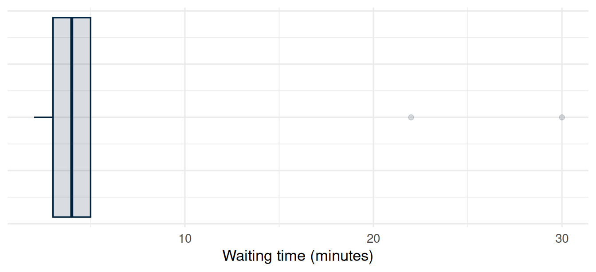
Box plot: the five numbers, drawn
- Box: Q1 to Q3, so its width is the IQR
- Line inside the box: the median
- Whiskers reach 1.5 x IQR beyond the box; further points are drawn individually
- Whiskers are not the minimum and maximum;
sedabove 24 sits off this axis
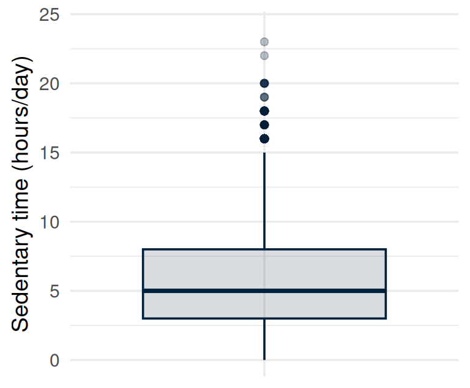
Comparing groups with box plots
- Does total cholesterol differ between men and women?
- One box per group, read side by side
- Centres are close and the boxes overlap: a small difference, not two separate distributions
- A description, not a test: tests come in Week 9
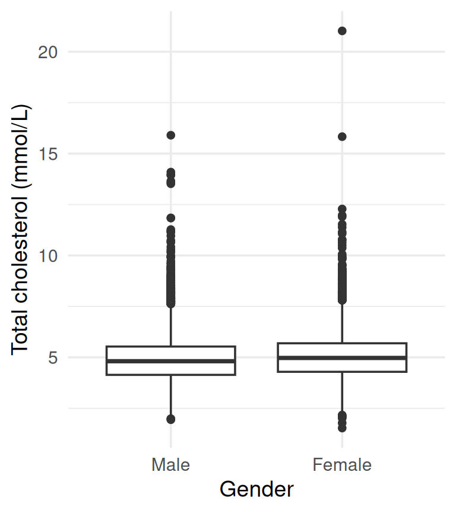
Sedentary time: which do we report?
| Mean | SD | Median | IQR |
|---|---|---|---|
| 6.6 | 10.9 | 5.0 | 5.0 |
- Sedentary time (
sed), hours/day - Mean and median disagree by over an hour: the first clue
Which plot, for which variable?
- We have used plots already: to see shape, and to compare groups
- Which plot works depends on the kind of variable
- Some variables are measured on a scale; some record which group someone is in
- Next: a plot for each kind
- The proper names for those kinds come after the break
Values on a scale: the histogram
- A histogram bins values on a scale, plots the count in each bin
- Shows the shape mean/SD or median/IQR can only summarise
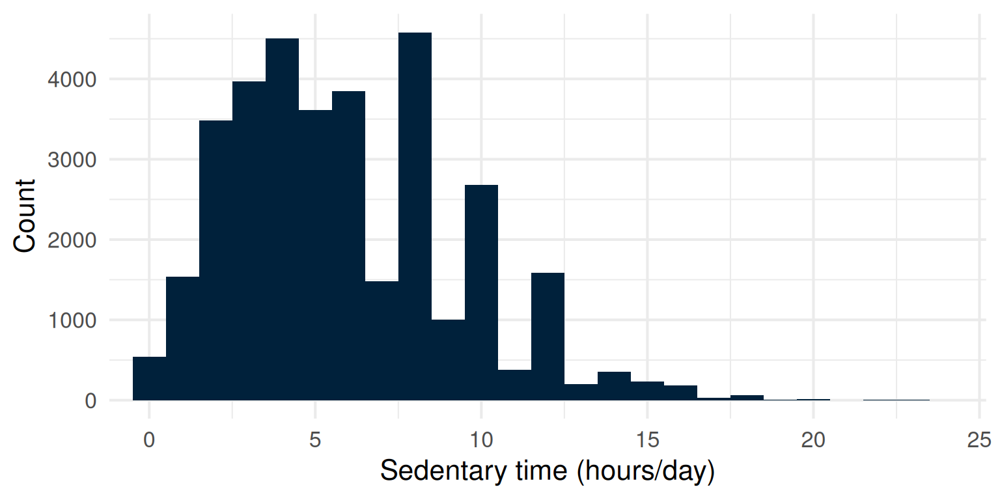
- 145 of 34,434 (0.4%) report over 24 hours/day and sit off this axis
Bin width changes the picture
- The same values, drawn three ways
- Too narrow: every wobble looks real
- Too wide: detail is lost
- Vertical scales are not shared
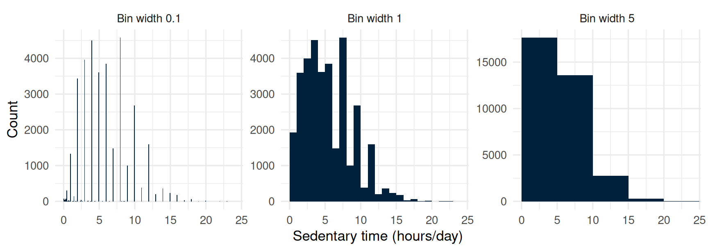
- If in doubt, look at more than one bins before choosing
Not every variable has a shape
- A histogram needs values on a scale to sort into bins
smokinghas no scale, just groups: Never, Previous, Current- We count how many fall in each group instead
- That count is a frequency table
| Category | N | Percent |
|---|---|---|
| Never | 23394 | 56.4 |
| Previous | 9468 | 22.8 |
| Current | 8580 | 20.7 |
Values that are labels: the bar chart
- A bar chart: one bar per group, count or percentage
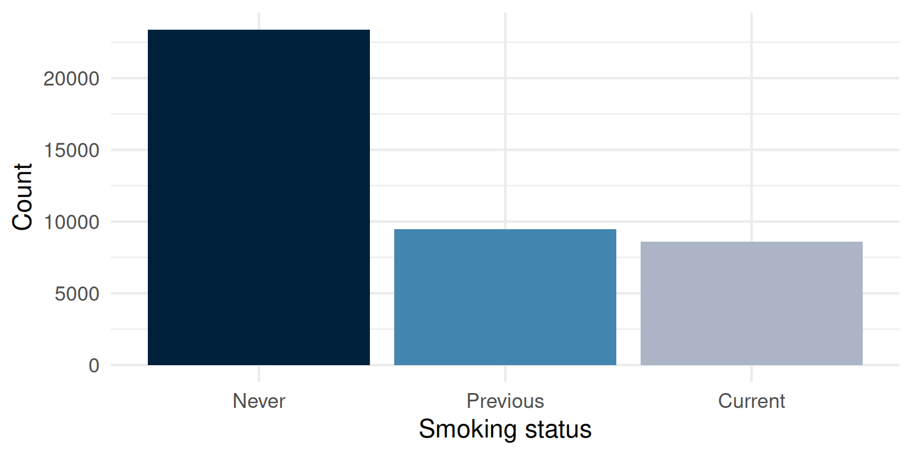
- Bars separated, axis has no numeric meaning between categories
- Unlike a histogram: bars touch, drawn along one scale
- The gap indicates the variable is not a scale
The pie chart, and why we avoid it
- One slice per group, the whole circle is 100%
- We judge angle and area less accurately than length
- Similar slices can’t be ranked by eye; two pies can’t be compared
- The last bar chart holds the same counts, readable
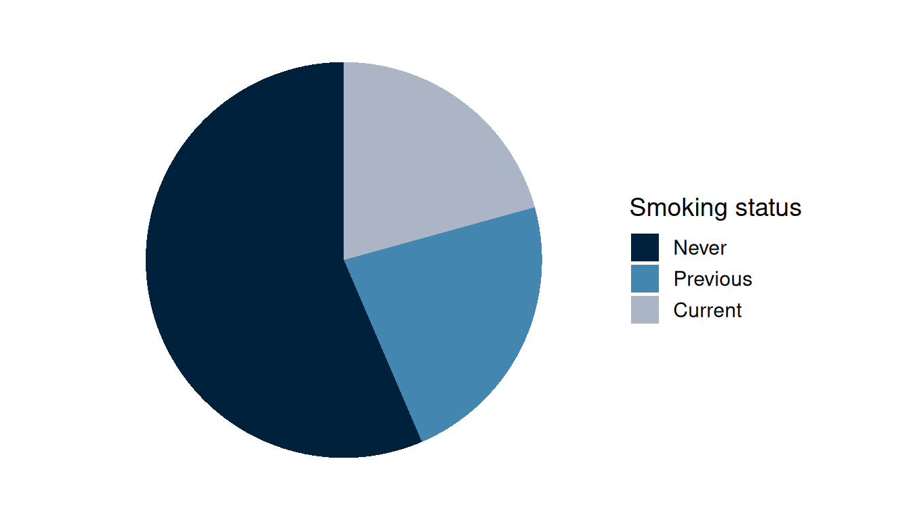
Comparing composition: the stacked bar
- Does smoking status differ between men and women?
- One bar per group, scaled to 100%
- Every bar starts at the same baseline: the bottom segment compares directly
- Higher segments are harder to compare
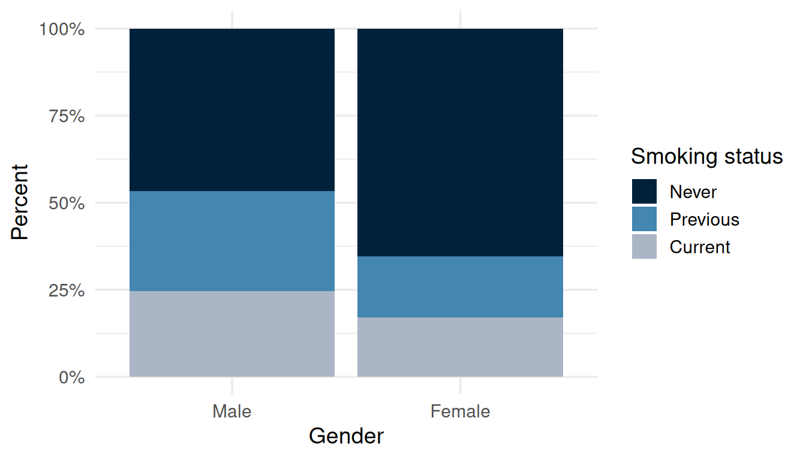
Block 2: data and variable types
Naming the property that decided every choice in Block 1
Which columns can we take a mean of?
- We treated
sedas a number andsmokingas labels, without much thought - Both were obvious
nhanes_mphhas 27 columnsgenderandblm.cvdare stored as numbers, but they are groups- Which of the rest can you take a mean of, and how do you know?
Two kinds of variable
- Categorical: puts each participant into one of a fixed set of groups
- Numeric: a number
- We used a categorical variable already:
smoking - We used a numeric variable already:
sed,chol - Both kinds split further
Categorical: nominal, ordinal, binary
- Nominal: the categories have no natural order
eth, ethnicity: Mexican American, Other Hispanic, White, Black, Others
- Ordinal: the categories run in a genuine order
phq.c, depression classification: Normal, Mild symptoms, Possible depression
- Binary: a two-category special case, present or absent
blm.cvd, baseline cardiovascular disease: No, Yes
Numeric: count and continuous
- Count (sometimes called discrete): whole numbers only
phq, the raw depression symptom score behindphq.c: 0 through 6
- Continuous: any value in a range is possible
chol, mmol/L;age, years;sed, hours/day
What R stores isn’t always what the variable is
blm.cvdis binary; R read its 0s and 1s as plain numbersgenderandedu: numbers standing in for a label- How data is stored doesn’t change the variable’s statistical type
- Check the dictionary, not the raw values
| Variable names | Description |
|---|---|
| gender | Gender (1=Male; 2=Female) |
| eth | Ethnicity (1=Mexican; 2=Other Hispanic; 3=White; 4=Black; 5=Others) |
| edu | Educaton (1=Less than high school; 2=high school graduate; 3=above high school) |
| smoking | Smoking status (Never/Previous/Current) |
| phq.c | Depression classification - PHQ-2 (0 Normal/1 Mild symptoms/2 Possible depression) |
| blm.cvd | Baseline CVD (0=No; 1=Yes) |
Where the boundary blurs
ageis recorded in whole years, but treated as continuous- A count with many possible values is often handled as continuous too
- Ordinal categories are sometimes scored as numbers for convenience, or as nominal categories for reasons we will see later
- This is sometimes a judgement call depending on the analysis need
Try it: what kind of variable is each column?
| patient_id | arm | gender | baseline_condition | rad_num | improved |
|---|---|---|---|---|---|
| 0008 | Control | M | 1_Good | 5 | TRUE |
| 0017 | Control | F | 2_Fair | 5 | TRUE |
| 0020 | Control | M | 2_Fair | 3 | FALSE |
| 0039 | Control | F | 3_Poor | 1 | FALSE |
| 0041 | Control | F | 3_Poor | 1 | FALSE |
| 0055 | Streptomycin | F | 1_Good | 6 | TRUE |
| 0072 | Streptomycin | M | 2_Fair | 5 | TRUE |
| 0083 | Streptomycin | M | 3_Poor | 6 | TRUE |
| 0101 | Streptomycin | F | 3_Poor | 2 | FALSE |
| 0102 | Streptomycin | M | 3_Poor | 6 | TRUE |
- The 1948 MRC streptomycin trial: ten of 107 patients shown
- Name each column’s type, and which you could average
Try it: the answer
patient_id: nominal, while this is a number this is a label for each individualarm: nominal (binary); Streptomycin or Controlgender: nominal (binary); the values are the letters F and Mbaseline_condition: ordinal; Good, Fair, Poor run in a real orderrad_num: a 1 to 6 score standing for an ordered category; or a countimproved: binary, stored as TRUE/FALSE; storage is not type
Which summary, which plot, for which type
| Type | Summary | Plot |
|---|---|---|
| Nominal / ordinal / binary | Frequency, percentage | Bar chart |
| Count | Frequency, or mean/SD/median/IQR if the range is wide | Bar chart, or histogram |
| Continuous, roughly symmetric | Mean and SD | Histogram, box plot |
| Continuous, skewed | Median and IQR | Histogram, box plot |
Two variables at once: the cross-tabulation
| Smoking | Male | Female |
|---|---|---|
| Never | 9302 | 14092 |
| Previous | 5704 | 3764 |
| Current | 4913 | 3667 |
- Rows:
smoking. Columns:gender - One cell per combination of the two variables
Row or column percentages?
Within each smoking group, the split by gender:
| Smoking | Male | Female |
|---|---|---|
| Never | 39.8 | 60.2 |
| Previous | 60.2 | 39.8 |
| Current | 57.3 | 42.7 |
Within each gender, the split by smoking:
| Smoking | Male | Female |
|---|---|---|
| Never | 46.7 | 65.5 |
| Previous | 28.6 | 17.5 |
| Current | 24.7 | 17.0 |
- Percentage of what depends on the question being asked
The 2x2 table, from the epi half
| Gender | No | Yes |
|---|---|---|
| Male | 17313 | 2201 |
| Female | 19464 | 1628 |
- Gender by baseline cardiovascular disease
- The same layout from epi weeks 1 to 5, reactivated here
- No risk ratio or odds ratio yet:
blm.cvdis measured at the same visit as the exposure, and Week 9 covers the formulae
Try it: build the 2x2
- Same ten patients as before, two columns only:
arm,improved - Build the 2x2 table for these ten patients
- Which variable goes in the rows, and which in the columns? Why?
- Ten patients only: this is not the trial’s result
| arm | improved |
|---|---|
| Control | TRUE |
| Control | TRUE |
| Control | FALSE |
| Control | FALSE |
| Control | FALSE |
| Streptomycin | TRUE |
| Streptomycin | TRUE |
| Streptomycin | TRUE |
| Streptomycin | FALSE |
| Streptomycin | TRUE |
Try it: the answer
| Arm | FALSE | TRUE |
|---|---|---|
| Streptomycin | 1 | 4 |
| Control | 3 | 2 |
- Treatment in the rows, outcome in the columns, as in the epi half
- Streptomycin: 4 improved, 1 not
- Control: 2 improved, 3 not
- The exposure defines the groups being compared, so it gets the rows
- Ten patients cannot support a measure of association: the real trial has 107, and Week 9 does it
What is a ‘Table 1’?
- The conventional first table in a paper, describing the participants
- Often stratified by the exposure or group of interest
- Each row shows the appropriate summary for that variable’s type
- Mean/SD or median/IQR for numeric, count/percentage for categorical: the same choice from a few slides ago
A Table 1
| Characteristic | Normal N = 25,1781 |
Mild symptoms N = 8,6281 |
Possible depression N = 3,4601 |
|---|---|---|---|
| age | 46 (31, 63) | 46 (30, 61) | 51 (36, 63) |
| gender | |||
| Male | 13,041 (52%) | 3,755 (44%) | 1,406 (41%) |
| Female | 12,137 (48%) | 4,873 (56%) | 2,054 (59%) |
| smoking | |||
| Never | 14,617 (58%) | 4,546 (53%) | 1,491 (43%) |
| Previous | 5,978 (24%) | 1,894 (22%) | 786 (23%) |
| Current | 4,396 (18%) | 2,090 (25%) | 1,164 (34%) |
| Unknown | 187 | 98 | 19 |
| chol | 4.89 (4.22, 5.61) | 4.89 (4.22, 5.64) | 4.91 (4.22, 5.69) |
| Unknown | 1,251 | 394 | 185 |
| 1 Median (Q1, Q3); n (%) | |||
- 37,266 of 41,765 classified
Application
Somebody else’s figure, and the design choice behind it
What does each chart make you believe?
- In pairs: name the type of variable on each axis
- Say whether a line chart suits them
- Spot the one design choice that changes the impression
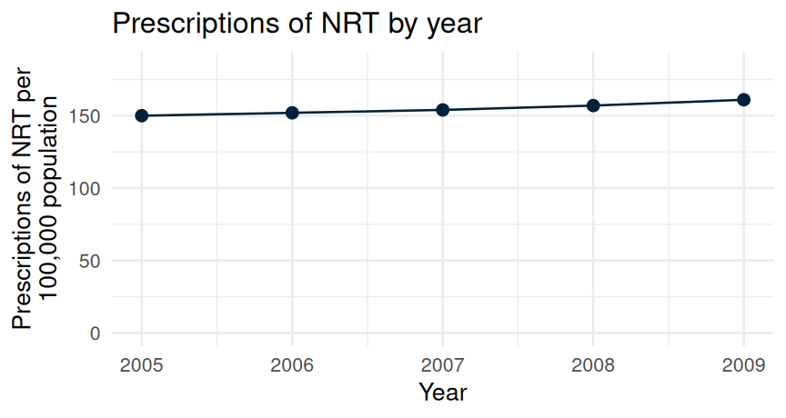
- Axis starts at zero
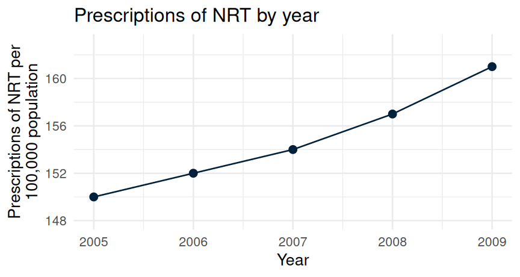
- Axis zoomed to the data
Same data, one misleading axis
year: a count variable, evenly spaced- Prescriptions of NRT per 100,000 population: a continuous variable
- A line chart suits both: an ordered numeric variable tracked over time
- The right chart’s y-axis does not start at zero, so a modest rise looks dramatic
- Always check where a y-axis starts before trusting the shape of a trend
Key points, and what the lab does
- Variable type decides the summary and the plot: nominal, ordinal, binary, count, continuous
- Shape decides mean/SD against median/IQR: check it before choosing
- A histogram, box plot, bar chart, or stacked bar each suit a different question
- The lab builds all of this in R, on
nhanes_mph, start to finish